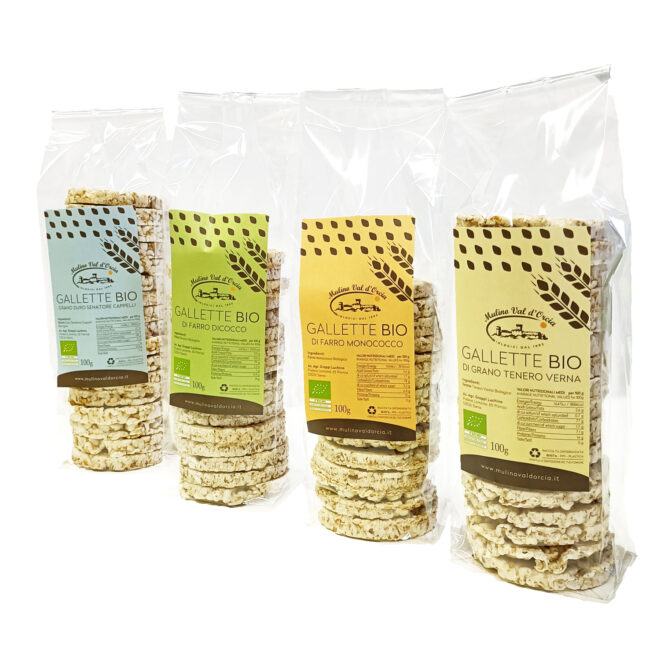
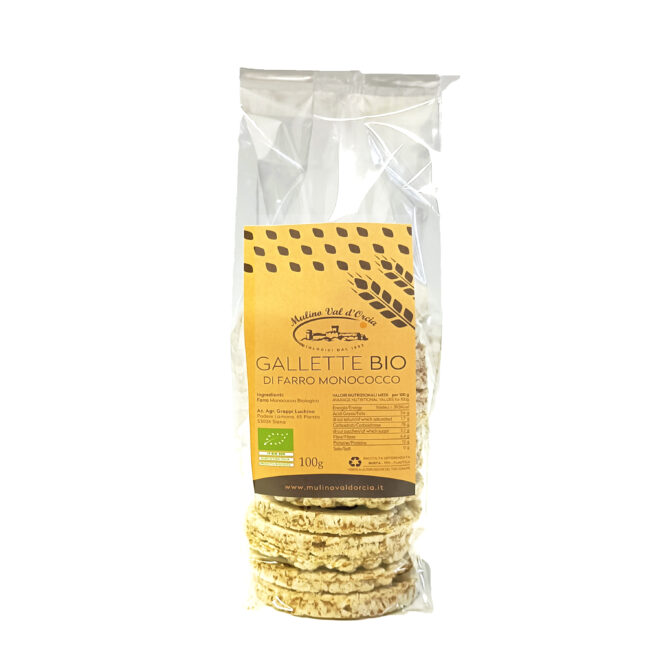
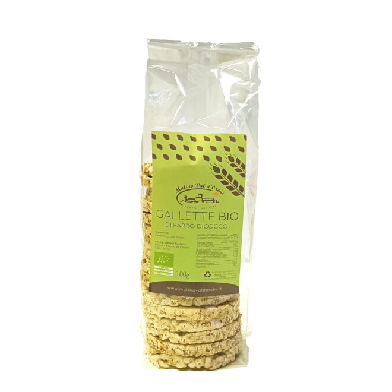
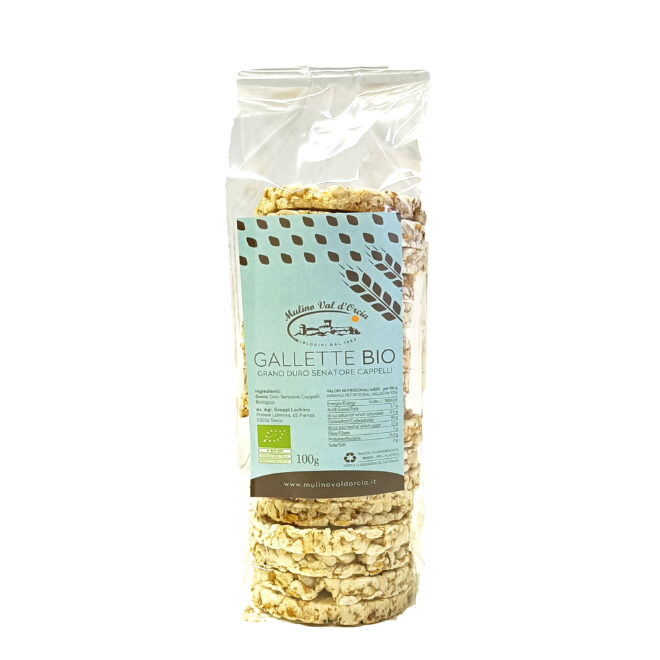
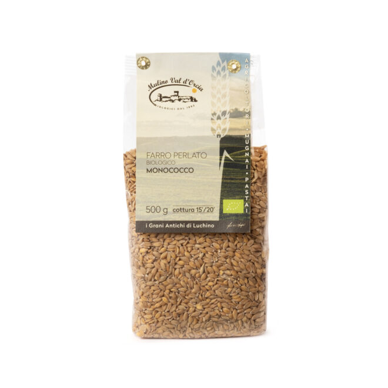
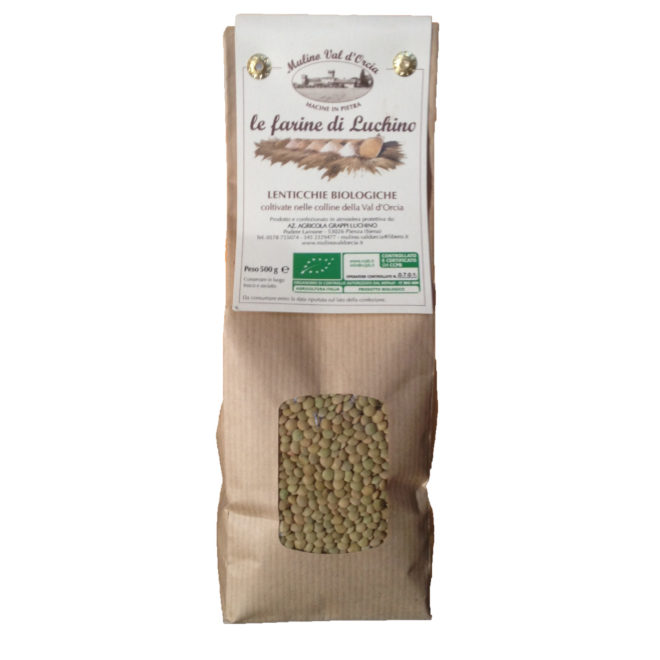
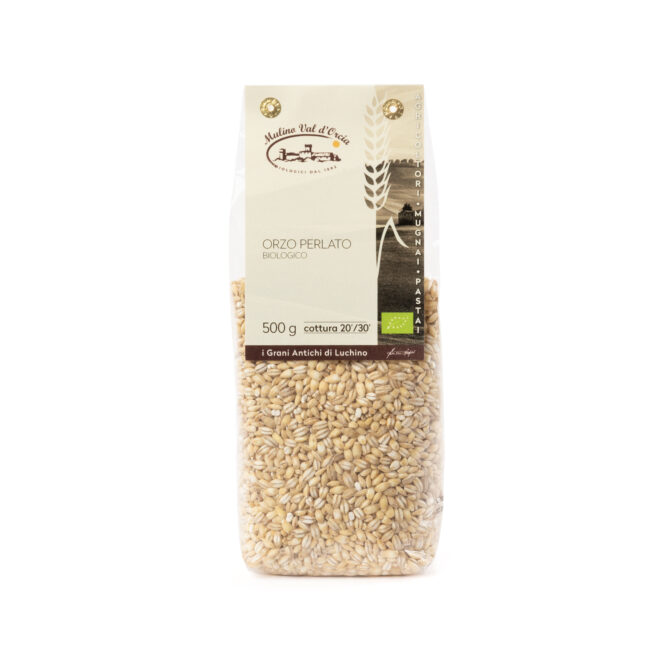
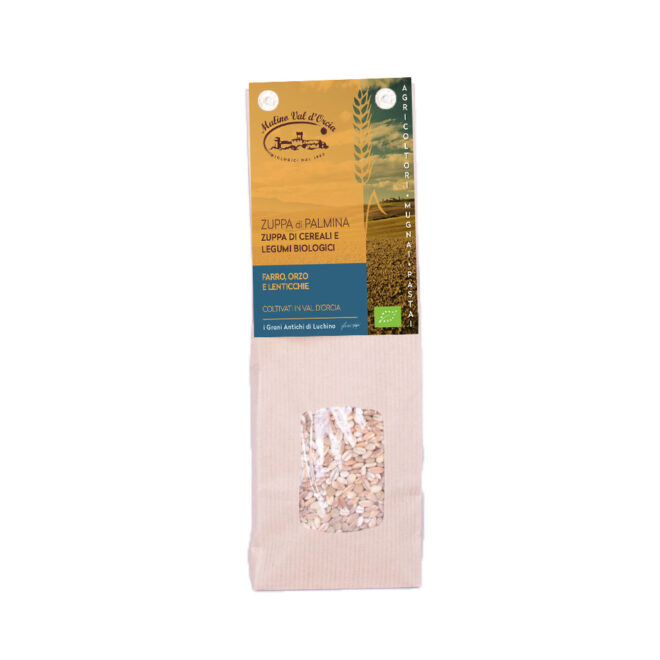

Home › Cereali, legumi e gallette
Cereali, legumi e gallette
Farro, orzo, ceci e lenticchie bio per zuppe e insalate, e le gallette fatte al Mulino.
Spedizione gratuita da 60 € di acquisto · corriere espresso, consegna entro 7 giorni lavorativi · carta, PayPal, bonifico o contrassegno
16 prodotti in questo reparto · qui sotto i più richiesti con foto, poi l’elenco completo

Box degustazione gallette14,00 €
Gallette di farro monococco3,50 €
Gallette di farro dicocco3,50 €
Gallette di grano duro Senatore Cappelli3,50 €
Farro monococcoda 3,50 €
Lenticchie biologicheda 7,00 €
Orzo perlatoda 3,50 €
Zuppa di Palmina4,00 €